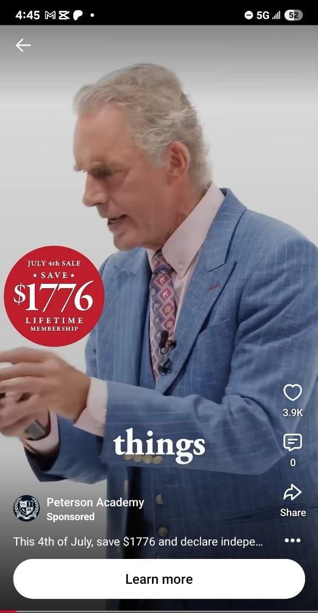
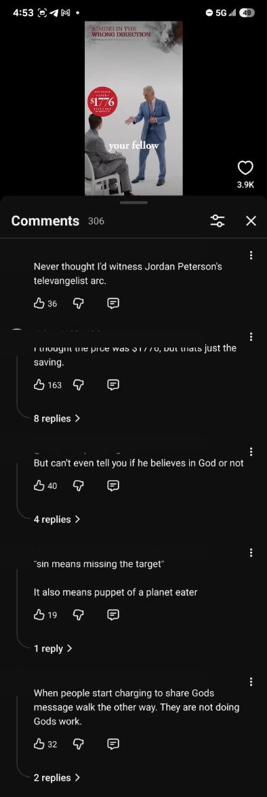

How to see comments on a YouTube ad
YouTube can hide the normal comments interface while a video is playing as an ad. The ad's Share link may still open the ordinary source video, where its comments and reply threads remain available.
VERIFIED: 2026-07-31 in the Android YouTube app. Interface labels can change.
THE SHORT VERSION
Tap Share on the ad, open the shared YouTube URL, then check the source video's comments. You are moving from the restricted ad player to the normal page for the same underlying video—not enabling a feature that the creator disabled.
THE MOBILE SHARE-LINK METHOD
- Open the ad's Share control. Use the Share button visible beside the sponsored video. The ad's comment button may show zero or report that the feature is unavailable.
- Copy or open the YouTube link. Choose Copy link, or send the link to a browser or another app and open it.
- Let YouTube open the source video. The destination is commonly the ordinary public or unlisted video that was used as the ad creative.
- Check the normal comments section. If the creator allows comments on the source video, the comment field, threads, and replies should now be visible.
ONE VIDEO, TWO SURFACES
In this observed example, the restricted ad surface showed the same 3.9K like count but a zero-comment indicator. Opening its shared source URL revealed the ordinary video page with 306 comments and active reply threads.
{kind=link}

{kind=link}

WHY THIS CAN WORK
A sponsored placement can be built from an ordinary YouTube video. The ad player controls which actions it exposes; the source video's own page has a different interface and comment policy. Google's help documentation also notes that unlisted videos can be viewed and reshared by anyone with the link and can support comments.
DESKTOP FALLBACK: RECOVER THE VIDEO ID
If Share does not reveal a useful page, older desktop methods recover the source video's ID from YouTube's diagnostic data:
- Right-click the playing ad and choose Copy debug info or Stats for nerds.
- Search the copied data for a video-ID field such as
addocid,ad_docid, orad_debug_videoId. Labels can change. - Open
https://www.youtube.com/watch?v=VIDEO_ID. - Check the source video's ordinary comment surface.
SOURCES + LINEAGE
- YouTube Help — Change video privacy settings
- Web Applications Stack Exchange — How to get the URL to a YouTube advert video?
- Anderegg — How to find the YouTube link for an ad
The source-video recovery family is established public knowledge. This field guide focuses on the shorter mobile Share route and its practical use for recovering a comments surface.